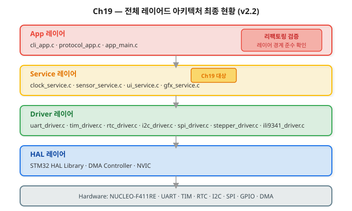
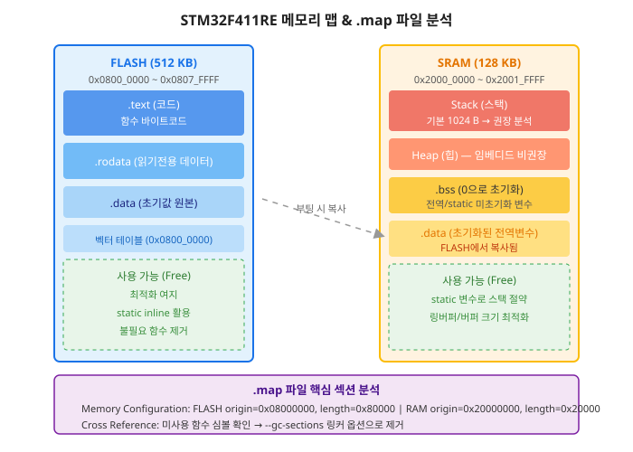
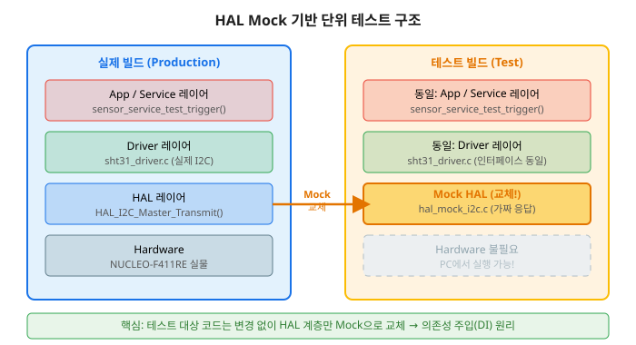
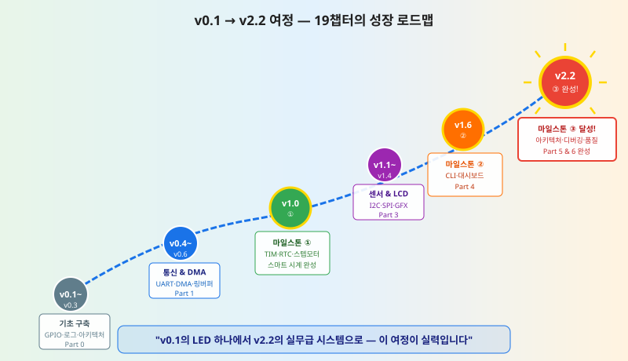

지난 18개 챕터를 통해 완성한 스마트 시계 & 환경 모니터링 시스템을 실무 수준의 코드 품질로 끌어올리고, 마일스톤 ③ v2.2를 달성합니다.
Ch19는 특정 레이어 하나에 새 기능을 추가하는 챕터가 아닙니다. 전체 레이어드 아키텍처(HAL → Driver → Service → App)를 수직으로 관통하며 품질을 향상시키는 챕터입니다. 각 레이어 경계가 올바르게 유지되고 있는지 검증하고, 레이어 위반이 있다면 리팩토링으로 바로잡습니다.

Ch19에서는 새 API를 추가하는 대신, 기존 API가 레이어 원칙을 준수하는지 검증합니다.
/* 레이어 위반 탐지 패턴 — App 레이어에서 HAL 직접 호출 여부 확인 */
/* BAD: App 레이어 (app_main.c)에서 HAL 직접 호출 — 레이어 위반 */
HAL_GPIO_WritePin(GPIOA, GPIO_PIN_5, GPIO_PIN_SET); /* 금지! */
/* GOOD: App 레이어에서 Driver 인터페이스만 사용 */
LED_SetState(LED_GREEN, LED_ON); /* led_driver.h의 공개 API */
이 챕터를 완료하면 다음을 할 수 있습니다.
volatile 누락, 정수 오버플로우, 재진입 문제 등 공통 버그 패턴을 진단하고 수정할 수 있다.static 활용으로 메모리를 최적화할 수 있다."MISRA-C(Motor Industry Software Reliability Association C)"라는 이름을 처음 들으면 자동차 산업 전용 규칙처럼 느껴질 수 있습니다. 하지만 MISRA-C 규칙은 자동차 뿐만 아니라 의료기기, 항공, 산업용 임베디드 전반에서 코드 품질의 기준으로 인정받고 있습니다. 이 절에서는 STM32 실무에서 가장 직접적으로 적용할 수 있는 10개 핵심 규칙을 왜, 어떻게 지켜야 하는지 실제 코드와 함께 살펴봅니다.
C 언어의 암시적 타입 변환(implicit type conversion)은 의도치 않은 결과를 낳습니다.
특히 uint8_t와 int 사이의 연산에서 부호 확장(sign extension)이
발생할 수 있습니다.
/* ❌ BAD: 암시적 변환 — 결과가 uint8_t 범위를 초과할 수 있음 */
uint8_t adc_8bit = (uint8_t)(HAL_ADC_GetValue(&hadc1)); /* 값이 잘림 */
/* ✅ GOOD: 명시적 캐스팅으로 의도 표현 */
uint16_t adc_raw = (uint16_t)HAL_ADC_GetValue(&hadc1);
uint16_t voltage_mv = (uint16_t)((uint32_t)adc_raw * 3300U / 4095U);
LOG_D("ADC 전압: %u mV", voltage_mv);
ISR(인터럽트 서비스 루틴)에서 설정하고 main()에서 읽는 변수는 반드시
volatile로 선언해야 합니다.
컴파일러는 volatile 없이는 "이 변수는 변하지 않는다"고 가정하여
최적화로 읽기 동작을 제거할 수 있습니다.
/* ❌ BAD: volatile 없음 — -O2 이상에서 컴파일러가 루프 제거 가능 */
uint8_t dma_done = 0;
while (dma_done == 0) {} /* 무한 루프 또는 루프 사라짐 */
/* ✅ GOOD: volatile 선언으로 매번 메모리에서 읽기 강제 */
volatile uint8_t dma_done = 0;
while (dma_done == 0U) {} /* 항상 메모리에서 최신 값 읽음 */
/* ❌ BAD: 반환값 무시 — 전송이 실패해도 알 수 없음 */
HAL_UART_Transmit(&huart2, buf, len, 100U);
/* ✅ GOOD: 반환값 확인 및 오류 처리 */
HAL_StatusTypeDef ret = HAL_UART_Transmit(&huart2, buf, len, 100U);
if (ret != HAL_OK)
{
LOG_E("UART 전송 실패: ret=%d, len=%u", (int)ret, len);
/* 오류 복구 또는 상위 레이어에 에러 전파 */
}
malloc()/free()는 힙 단편화(heap fragmentation)를 일으키고
실시간 시스템에서 결정론적 동작을 보장하지 못합니다.
임베디드 시스템에서는 정적 버퍼나 메모리 풀을 사용합니다.
/* ❌ BAD: 동적 메모리 할당 */
uint8_t *sensor_buf = (uint8_t *)malloc(256U);
if (sensor_buf == NULL) { /* ... */ }
/* ... */
free(sensor_buf); /* 언제, 어디서 해제? 추적 어려움 */
/* ✅ GOOD: 정적 버퍼 사용 */
static uint8_t sensor_buf[256U]; /* 컴파일 타임에 크기 확정 */
/* 항상 사용 가능, 단편화 없음 */
#define MAX(a,b) ((a)>(b)?(a):(b)) — 인수와 결과 모두 괄호switch에 default 브랜치 필수uint8_t cnt = 0U;)소프트웨어가 커지면서 가장 흔하게 발생하는 품질 저하 패턴은 "레이어 경계 붕괴(Layer Boundary Erosion)"입니다. 처음에는 빠른 구현을 위해 App에서 HAL을 직접 호출하지만, 시간이 지날수록 각 파일이 시스템 전체에 의존하게 되어 수정 하나가 예상치 못한 곳에서 버그를 일으킵니다.
/* ========== BEFORE: app_main.c — 레이어 위반 ========== */
#include "stm32f4xx_hal.h" /* App이 HAL을 직접 include — 위반! */
void App_UpdateSystemStatus(uint8_t err_count)
{
if (err_count > 5U)
{
/* App이 HAL 직접 호출 — 레이어 경계 위반 */
HAL_GPIO_WritePin(GPIOA, GPIO_PIN_5, GPIO_PIN_SET);
extern UART_HandleTypeDef huart2;
uint8_t msg[] = "SYS_ERR\r\n";
HAL_UART_Transmit(&huart2, msg, 9U, 100U);
}
}
/* ========== AFTER: app_main.c — 레이어 준수 ========== */
#include "led_driver.h" /* Driver 레이어 인터페이스만 include */
#include "uart_driver.h" /* Driver 레이어 인터페이스만 include */
void App_UpdateSystemStatus(uint8_t err_count)
{
if (err_count > 5U)
{
/* GOOD: Driver 레이어의 공개 API를 통해 요청 */
LED_SetState(LED_STATUS, LED_ON);
UART_SendString("SYS_ERR\r\n");
LOG_W("시스템 오류 횟수 초과: count=%u", err_count);
}
else
{
LED_SetState(LED_STATUS, LED_OFF);
}
}
/* ========== BEFORE: sensor_service.c — 레이어 위반 ========== */
void SensorService_Trigger(void)
{
/* Service가 HAL을 직접 호출 — Driver 레이어 우회 */
extern I2C_HandleTypeDef hi2c1;
uint8_t cmd[2] = {0x2CU, 0x06U};
HAL_I2C_Master_Transmit(&hi2c1, 0x88U, cmd, 2U, 100U);
/* ... */
}
/* ========== AFTER: sensor_service.c — 레이어 준수 ========== */
#include "sht31_driver.h" /* Driver 레이어만 사용 */
void SensorService_Trigger(void)
{
/* GOOD: Driver의 인터페이스를 통해 요청 */
HAL_StatusTypeDef ret = SHT31_StartMeasurement();
if (ret != HAL_OK)
{
LOG_E("센서 측정 시작 실패: ret=%d", (int)ret);
/* 오류를 App 레이어로 전파 */
}
LOG_D("센서 측정 요청 완료");
}
/* ========== BEFORE: 전역으로 노출된 HAL 핸들 ========== */
/* main.c 또는 전역 헤더 */
extern I2C_HandleTypeDef hi2c1; /* 전체 코드에서 접근 가능 */
extern UART_HandleTypeDef huart2;
/* ========== AFTER: Driver 내부로 캡슐화 ========== */
/* i2c_driver.c — 핸들을 static으로 은닉 */
static I2C_HandleTypeDef *s_hi2c = NULL; /* 모듈 내부에서만 접근 */
void I2C_Driver_Init(I2C_HandleTypeDef *hi2c)
{
s_hi2c = hi2c; /* 초기화 시 한 번만 주입 */
LOG_I("I2C Driver 초기화 완료");
}
/* 외부에서는 핸들 직접 접근 불가 — 인터페이스만 사용 */
HAL_StatusTypeDef I2C_Write(uint8_t addr, const uint8_t *data, uint16_t len)
{
return HAL_I2C_Master_Transmit(s_hi2c, (uint16_t)(addr << 1U), (uint8_t *)data, len, 100U);
}
임베디드 C 개발에서 반복적으로 나타나는 버그 패턴이 있습니다. 이 패턴들은 컴파일 오류가 아니어서 코드 리뷰 없이는 발견하기 어렵고, 특정 조건(최적화 레벨, 타이밍)에서만 재현되어 디버깅도 까다롭습니다. 이 절에서는 세 가지 핵심 버그 패턴을 증상, 원인, 수정 방법 순으로 살펴봅니다.
증상: 디버거를 연결하면 정상 동작하지만, 빌드 후 플래시에서 실행하면 무한 루프에 빠집니다.
최적화 레벨을 -O0에서 -O2로 올리면 문제가 나타납니다.
/* 원인 분석: 컴파일러 최적화 관점 */
/* volatile 없이 선언 */
uint8_t g_rx_done = 0U;
/* ISR에서 설정 */
void HAL_UART_RxCpltCallback(UART_HandleTypeDef *huart)
{
g_rx_done = 1U; /* 컴파일러는 이 코드를 알지 못함 */
}
/* main에서 대기 — 컴파일러는 g_rx_done이 항상 0이라고 판단 */
/* -O2 이상에서 컴파일러가 "while (0 == 0) {}" 즉 무한루프로 최적화 가능 */
while (g_rx_done == 0U) {}
/* 수정: volatile 추가 */
volatile uint8_t g_rx_done = 0U; /* 컴파일러 최적화에서 제외 */
증상: 특정 값 이상에서 계산 결과가 음수나 예상과 전혀 다른 값이 됩니다. 타이머 주기 계산, 스텝 수 계산에서 자주 발생합니다.
/* 위험한 패턴: 연산 중간 결과가 오버플로우 */
#define STEPS_PER_REV 4096U
#define MS_PER_MIN 60000U
/* ❌ BAD: rpm=200, duration_ms=1000 → 200 * 1000 * 4096 = 819,200,000 */
/* uint32_t 최대값은 4,294,967,295이지만 아슬아슬함 */
/* rpm이 커지면 오버플로우 발생 */
uint32_t bad_steps = rpm * duration_ms * STEPS_PER_REV / MS_PER_MIN;
/* ✅ GOOD: 나눗셈을 먼저 수행하여 중간값 제한 */
/* steps_per_ms = rpm * 4096 / 60000: 최대 200*4096/60000 ≈ 13 (안전) */
uint32_t steps_per_ms = (rpm * STEPS_PER_REV) / MS_PER_MIN;
uint32_t good_steps = steps_per_ms * duration_ms; /* 최대 13 * 60000 = 780000 (안전) */
LOG_D("스텝 계산: rpm=%lu, dur=%lu ms, steps=%lu", rpm, duration_ms, good_steps);
증상: UART 전송 내용이 가끔 깨지거나, 두 메시지가 섞여 출력됩니다. 인터럽트 우선순위가 높을수록, 시스템 부하가 높을수록 재현 빈도가 높아집니다.
/* 재진입 문제 발생 시나리오 */
static uint8_t g_tx_buf[64];
static uint8_t g_tx_len = 0U;
void uart_send(const char *str)
{
g_tx_len = (uint8_t)strlen(str); /* ← 여기서 인터럽트 발생! */
/* 인터럽트 핸들러에서 uart_send() 재호출 시 g_tx_buf 덮어쓰기 */
memcpy(g_tx_buf, str, g_tx_len); /* ← 이미 내용이 오염됨 */
HAL_UART_Transmit_DMA(&huart2, g_tx_buf, g_tx_len);
}
/* ✅ GOOD: Critical Section으로 원자적 처리 보장 */
void uart_send_safe(const char *str)
{
uint32_t primask;
/* PRIMASK로 모든 인터럽트 일시 차단 */
primask = __get_PRIMASK();
__disable_irq();
g_tx_len = (uint8_t)strlen(str);
memcpy(g_tx_buf, str, g_tx_len);
__set_PRIMASK(primask); /* 인터럽트 복원 */
HAL_UART_Transmit_DMA(&huart2, g_tx_buf, g_tx_len);
LOG_D("UART 안전 전송: len=%u", g_tx_len);
}
STM32F411RE는 FLASH 512 KB, SRAM 128 KB를 갖고 있습니다.
앱이 커질수록 메모리 부족으로 인한 스택 오버플로우나 하드폴트(HardFault)가 발생할 수 있습니다.
이 절에서는 STM32CubeIDE가 생성하는 .map 파일을 분석하여
현재 메모리 사용 현황을 파악하고 최적화하는 방법을 배웁니다.

STM32CubeIDE에서 빌드하면 Debug/ 폴더에 프로젝트명.map 파일이 생성됩니다.
텍스트 에디터로 열어 다음 3가지 항목을 확인합니다.
/* .map 파일 예시 — 실제 내용 발췌 */
/* 1. Memory Configuration */
Memory region Used Size Region Size %age Used
FLASH: 142820 B 512 KB 27.24%
RAM: 14256 B 128 KB 10.87%
/* 2. 가장 많은 메모리를 차지하는 심볼 확인 */
/* .bss 섹션에서 큰 전역 버퍼 찾기 */
.bss.g_display_frame_buf
0x20001000 0x2580 display_service.o
/* 3. 미사용 함수 심볼 (--gc-sections 링커 옵션 적용 후 확인) */
LOAD linker_flags = -Wl,--gc-sections /* 미사용 코드 자동 제거 */
/* ❌ BAD: 함수 내 대형 배열 — 스택에 할당, 스택 오버플로우 위험 */
void bad_process_data(void)
{
uint8_t work_buf[512]; /* 스택에 512 B 할당 — 기본 스택 1 KB의 절반! */
/* ... */
}
/* ✅ GOOD: static으로 선언 — .bss 섹션으로 이동 (스택 아닌 RAM 영역) */
void good_process_data(void)
{
static uint8_t work_buf[512]; /* .bss 섹션에 배치, 스택 부담 없음 */
/* 주의: 재진입 불가 — 동시에 여러 곳에서 호출되면 공유됨 */
/* 단일 태스크(main loop)에서만 호출되는 경우에 적합 */
LOG_D("work_buf 주소: 0x%08lX", (uint32_t)work_buf);
}
/* STM32CubeIDE: Project → Properties → C/C++ Build → Settings */
/* Linker Script (STM32F411RETx_FLASH.ld) 에서 스택 크기 조정 */
/* 스택 사용량 런타임 모니터링 — 스택 페인팅 기법 */
#define STACK_CANARY_VALUE 0xDEADBEEFU
#define STACK_CHECK_DEPTH 64U
void Stack_FillCanary(void)
{
/* 현재 SP 아래를 0xDEADBEEF로 채움 (초기화 시 한 번) */
extern uint32_t _estack;
uint32_t *p = (uint32_t *)((uint32_t)&_estack - 1024U);
for (uint32_t i = 0U; i < STACK_CHECK_DEPTH; i++)
{
p[i] = STACK_CANARY_VALUE;
}
}
uint32_t Stack_GetUsage(void)
{
extern uint32_t _estack;
uint32_t *p = (uint32_t *)((uint32_t)&_estack - 1024U);
uint32_t i;
for (i = 0U; i < STACK_CHECK_DEPTH; i++)
{
if (p[i] != STACK_CANARY_VALUE)
{
break;
}
}
uint32_t used = (STACK_CHECK_DEPTH - i) * sizeof(uint32_t);
LOG_I("스택 최대 사용량: %lu / 1024 Bytes", used);
return used;
}
"임베디드 시스템에 단위 테스트가 가능한가?"라는 질문에 많은 개발자가 "하드웨어가 없으면 테스트할 수 없다"고 생각합니다. 하지만 레이어드 아키텍처를 올바르게 적용했다면, HAL 레이어만 Mock(가짜 구현)으로 교체하여 Driver와 Service 레이어를 PC에서 바로 테스트할 수 있습니다.

/* hal_mock_i2c.h — Mock HAL I2C 헤더 (테스트 빌드에서 stm32f4xx_hal.h 대체) */
#ifndef HAL_MOCK_I2C_H
#define HAL_MOCK_I2C_H
#include <stdint.h>
typedef enum { HAL_OK=0, HAL_ERROR=1, HAL_BUSY=2, HAL_TIMEOUT=3 } HAL_StatusTypeDef;
typedef struct { uint32_t Instance; } I2C_HandleTypeDef;
/* Mock 제어 인터페이스 — 테스트 케이스에서 동작 주입 */
void MockI2C_SetTxResult(HAL_StatusTypeDef result);
void MockI2C_SetRxResult(HAL_StatusTypeDef result);
void MockI2C_SetRxData(const uint8_t *data, uint16_t size);
/* 호출 기록 조회 */
int MockI2C_GetTxCallCount(void);
int MockI2C_GetRxCallCount(void);
/* HAL 표준 인터페이스 (테스트 대상 코드가 호출하는 함수) */
HAL_StatusTypeDef HAL_I2C_Master_Transmit(I2C_HandleTypeDef *hi2c, uint16_t DevAddress,
uint8_t *pData, uint16_t Size, uint32_t Timeout);
HAL_StatusTypeDef HAL_I2C_Master_Receive(I2C_HandleTypeDef *hi2c, uint16_t DevAddress,
uint8_t *pData, uint16_t Size, uint32_t Timeout);
void HAL_Delay(uint32_t Delay);
#endif /* HAL_MOCK_I2C_H */
/* test_sht31_driver.c */
#include "hal_mock_i2c.h"
#include "sht31_driver.h"
#include <assert.h>
#include <stdio.h>
/* TC01: 정상 측정 시나리오 */
void test_SHT31_normal_read(void)
{
/* Given: 25°C, 50% RH에 해당하는 원시 데이터 */
uint8_t mock_data[6] = {0x66, 0x66, 0xFF, 0x80, 0x00, 0xFF};
MockI2C_SetRxData(mock_data, 6U);
MockI2C_SetTxResult(HAL_OK);
MockI2C_SetRxResult(HAL_OK);
/* When: 센서 읽기 */
float temp, humi;
HAL_StatusTypeDef ret = SHT31_Read(&temp, &humi);
/* Then: 정상 반환, 올바른 값 */
assert(ret == HAL_OK);
assert(temp > 24.5f && temp < 25.5f);
assert(humi > 49.0f && humi < 51.0f);
assert(MockI2C_GetTxCallCount() == 1); /* Transmit 1회 */
assert(MockI2C_GetRxCallCount() == 1); /* Receive 1회 */
printf("[PASS] TC01: SHT31 정상 읽기 — temp=%.1f°C, humi=%.1f%%\n", temp, humi);
}
/* TC02: I2C 오류 시 조기 반환 */
void test_SHT31_i2c_error(void)
{
/* Given: Transmit 실패 주입 */
MockI2C_SetTxResult(HAL_ERROR);
/* When: 센서 읽기 시도 */
float temp, humi;
HAL_StatusTypeDef ret = SHT31_Read(&temp, &humi);
/* Then: HAL_ERROR 전파, Receive 미호출 */
assert(ret == HAL_ERROR);
assert(MockI2C_GetRxCallCount() == 0);
printf("[PASS] TC02: I2C 오류 처리 확인\n");
}
좋은 코드 리뷰는 버그를 잡는 것을 넘어 팀 전체의 코드 품질 기준을 높입니다. 이 절에서는 STM32 임베디드 프로젝트에 특화된 코드 리뷰 체크리스트를 소개합니다. v2.2 마일스톤 달성을 위해 이 체크리스트를 통과해야 합니다.
huart2 등)을 직접 참조하지 않는가?volatile이 선언되어 있는가?HAL_StatusTypeDef)을 확인하는가?U 접미사가 붙어 있는가? (100U, 0x2CU)malloc/free가 사용되지 않는가?switch에 default 케이스가 있는가?@brief, @param, @return)이 있는가?LOG_E() 또는 LOG_W()가 있는가?LOG_I()가 있는가?LOG_D()를 사용하여 성능 영향을 최소화하는가?LOG_LEVEL 매크로)이 절에서는 STM32/임베디드 C 개발자 채용 면접에서 자주 출제되는 20개 질문을 DMA, RTC, FSM, 아키텍처, 인터럽트 카테고리별로 정리합니다. 이 교재를 완주한 여러분이라면 모두 대답할 수 있어야 하는 질문들입니다.
Q1. DMA(Direct Memory Access)와 폴링 방식의 CPU 점유율 차이를 설명하시오.
A. 폴링 방식은 CPU가 데이터 전송이 완료될 때까지 계속 상태를 확인하므로
전송 중 CPU 점유율이 100%에 가깝습니다.
DMA는 DMA 컨트롤러가 버스를 통해 CPU 개입 없이 메모리 ↔ 주변장치 간 데이터를 이동하므로
CPU는 전송 중에 다른 작업을 수행할 수 있습니다.
전송 완료 시 DMA가 인터럽트를 발생시켜 CPU에 완료를 알립니다.
[핵심 키워드] 버스 마스터, DMA 컨트롤러, 완료 인터럽트, CPU 해방
Q2. DMA 완료 콜백이 두 번 호출되는 상황은 언제 발생하는가?
A. 순환 모드(Circular Mode)에서 더블 버퍼링을 사용할 때 발생합니다.
전체 버퍼의 절반이 채워지면 HAL_DMA_IRQHandler()가 "반완료(Half-Complete)" 콜백을 호출하고,
전체 버퍼가 채워지면 "완료(Complete)" 콜백을 호출합니다.
예를 들어 UART IDLE DMA 수신(HAL_UARTEx_ReceiveToIdle_DMA)에서
반완료 콜백을 구현하지 않으면 반완료 시 처리가 누락됩니다.
[핵심 키워드] Circular Mode, Half-Transfer, HTIF, TCIF
Q3. STM32F4 DMA에서 Stream과 Channel의 관계를 설명하시오.
A. STM32F4에는 DMA1, DMA2 두 개의 컨트롤러가 있으며,
각 컨트롤러는 8개의 Stream을 갖고 있습니다.
각 Stream은 8개의 Channel 중 하나와 연결되어 어떤 주변장치의 요청을 받을지 결정합니다.
예를 들어 UART2 TX는 DMA1 Stream6 Channel4로 고정되어 있습니다.
CubeMX는 이 고정 매핑을 자동으로 처리하며,
사용자는 Stream 우선순위만 설정합니다.
[핵심 키워드] DMA1/DMA2, Stream (0~7), Channel (0~7), 요청 매핑 테이블
Q4. DMA 전송 중 데이터 일관성 문제가 발생하는 조건과 해결책은?
A. DMA가 버퍼를 읽는 동안 CPU가 동일한 버퍼를 수정하면 데이터가 깨집니다.
해결책: (1) 핑퐁 버퍼(Ping-Pong Buffer) — DMA는 버퍼 A, CPU는 버퍼 B를 교대로 사용.
(2) Busy 플래그 — DMA 전송 중에 CPU가 버퍼를 수정하지 못하도록 플래그로 보호.
STM32F4에 캐시가 없어 캐시 일관성 문제는 발생하지 않으나,
STM32H7 등 Cortex-M7은 SCB_CleanDCache() 호출이 필요합니다.
[핵심 키워드] 핑퐁 버퍼, Busy 플래그, 캐시 일관성, DMA 전송 완료 후 접근
Q5. DMA 순환 모드(Circular Mode)와 일반 모드(Normal Mode)의 차이는?
A. 일반 모드는 설정된 데이터 전송이 완료되면 DMA가 자동으로 비활성화됩니다.
다음 전송을 위해 HAL_DMA_Start_IT()나 HAL_UART_Receive_DMA()를 다시 호출해야 합니다.
순환 모드는 전송이 완료되면 자동으로 초기 주소로 돌아가 연속 전송을 반복합니다.
ADC 연속 변환, UART 실시간 수신 등에 적합합니다.
[핵심 키워드] CIRC 비트, 자동 재시작, 링 버퍼 연동
Q6. NUCLEO-F411RE에서 LSE와 LSI의 정확도 차이 및 선택 기준은?
A. LSE(저속 외부 클럭)는 외부 32.768 kHz 크리스탈을 사용하며 정확도가 매우 높습니다(±20 ppm).
하지만 NUCLEO-F411RE 기본 보드에는 LSE 크리스탈이 미장착되어 있어 SB48/SB49 솔더 브리지를 연결해야 합니다.
LSI(저속 내부 RC 오실레이터)는 30~50 kHz 범위에서 동작하며 ±5% 이상의 오차가 있어
하루에 수 분씩 오차가 누적될 수 있습니다.
시각 정확도가 중요한 스마트 시계에는 LSE, 저전력 경보 기능만 필요하다면 LSI를 선택합니다.
[핵심 키워드] LSE 32.768 kHz, SB48/SB49, LSI ±5%, 정확도 vs 부품 비용
Q7. 전원이 차단된 후에도 RTC 시각이 유지되는 조건은?
A. RTC가 백업 도메인(Backup Domain)에서 동작하고, VBAT 핀에 배터리가 연결되어야 합니다.
백업 도메인은 VDD가 없어도 VBAT로 동작을 유지합니다.
이를 위해 (1) RTC 클럭 소스가 LSE 또는 LSI여야 하고,
(2) PWR_BackupAccessCmd(ENABLE)으로 백업 도메인에 대한 쓰기 권한을 활성화해야 하며,
(3) NUCLEO-F411RE에서는 CN3 배터리 소켓에 CR2032를 장착합니다.
[핵심 키워드] Backup Domain, VBAT, CR2032, LSE 연속 동작
Q8. RTC 백업 레지스터의 용도와 활용 예를 설명하시오.
A. RTC 백업 레지스터(BKP)는 전원이 차단되어도 VBAT가 있으면 유지되는 20개의 32비트 레지스터입니다.
용도: (1) 재부팅 후 RTC가 이미 설정되었는지 확인(마법 숫자 저장), (2) 재부팅 원인 기록, (3) 소량의 설정값 저장.
예: HAL_RTCEx_BKUPWrite(&hrtc, RTC_BKP_DR0, 0xBEEFU)로 초기화 완료 표시를 저장하고,
재부팅 시 이 값을 읽어 RTC 재설정 여부를 결정합니다.
[핵심 키워드] BKP 레지스터, 마법 숫자, 재부팅 후 상태 복원
Q9. 테이블 기반 FSM과 switch-case FSM의 장단점을 비교하시오.
A.
switch-case FSM: 구현이 직관적이고 디버깅이 쉽지만, 상태/이벤트가 늘어날수록 코드가 중첩되어 유지보수가 어렵습니다.
테이블 기반 FSM: 전이 테이블(상태 × 이벤트 → 다음 상태 + 액션)을 배열로 정의하므로
상태 추가 시 테이블만 수정하면 됩니다. 코드 크기가 일정하게 유지되지만 초기 설계 비용이 높습니다.
실무 기준: 상태 5개 이하는 switch-case, 이상은 테이블 기반을 권장합니다.
[핵심 키워드] 전이 테이블, 함수 포인터 배열, 상태 × 이벤트 매트릭스
Q10. 계층적 FSM(HFSM)이 필요한 상황의 예를 드시오.
A. 공통 동작을 공유하는 슈퍼 상태(Super State)가 있을 때 HFSM이 유용합니다.
예: 스마트 시계의 DISPLAY FSM에서 TIME_VIEW, SENSOR_VIEW, STOPWATCH_VIEW 모두 공통으로
"버튼 길게 누르기 → 설정 모드 진입" 전이가 필요합니다.
HFSM 없이 구현하면 이 전이를 세 상태 모두에 중복 작성해야 합니다.
HFSM에서는 공통 전이를 슈퍼 상태인 DISPLAY에 한 번만 정의합니다.
[핵심 키워드] 슈퍼 상태, 전이 공유, 이벤트 버블링, 중복 제거
Q11. FSM에서 재진입(re-entrant) 문제가 발생하는 조건과 방지책은?
A. ISR에서 FSM 상태 전이 함수를 직접 호출할 때 main()이 동일 함수를 실행 중이면
공유 상태 변수가 동시에 수정되어 FSM이 예측 불가능한 상태로 전이됩니다.
방지책: (1) ISR에서는 이벤트 큐에 이벤트를 넣고, main loop에서 큐를 처리합니다.
(2) 상태 변수 접근 시 Critical Section(__disable_irq())을 사용합니다.
(3) 원자적 연산(atomic operation)을 활용합니다.
[핵심 키워드] 이벤트 큐, Critical Section, 원자적 상태 전이
Q12. 인터럽트 핸들러에서 FSM 전이 이벤트를 안전하게 처리하는 패턴은?
A. "이벤트 플래그 + main loop 처리" 패턴을 사용합니다.
ISR에서는 volatile uint8_t g_event_flags에 이벤트 비트를 설정하고 즉시 반환합니다.
main loop에서 플래그를 확인하여 FSM 전이를 처리합니다.
이 패턴은 ISR을 짧고 빠르게 유지하면서 FSM 로직의 재진입 문제를 방지합니다.
FreeRTOS를 사용한다면 xEventGroupSetBitsFromISR()을 활용합니다.
[핵심 키워드] 이벤트 플래그, volatile, ISR 최소화, defer to main loop
Q13. 레이어드 아키텍처에서 상향 의존성(upward dependency)이 발생하면 어떤 문제가 생기는가?
A. 상향 의존성이란 하위 레이어(Driver)가 상위 레이어(App)를 참조하는 것입니다.
예: UART Driver가 App의 오류 처리 함수를 직접 호출하는 경우.
이렇게 되면 (1) Driver를 다른 프로젝트에 재사용할 때 App 코드도 함께 가져와야 하고,
(2) 순환 의존성(circular dependency)이 생겨 링크 오류가 발생하며,
(3) 테스트 시 App 없이 Driver만 독립 테스트가 불가능합니다.
해결책: 콜백 함수 포인터를 사용하거나 이벤트 버스 패턴을 적용합니다.
[핵심 키워드] 순환 의존성, 재사용성 저하, 콜백 패턴, 의존성 역전
Q14. HAL → Driver → Service → App 각 레이어의 책임을 예를 들어 설명하시오.
A.
HAL 레이어: STM32 하드웨어 추상화 — HAL_I2C_Master_Transmit()로 I2C 비트를 전송합니다.
Driver 레이어: 특정 디바이스 프로토콜 처리 — SHT31_Read()로 명령 전송 → 15ms 대기 → 데이터 수신 → CRC 검증을 캡슐화합니다.
Service 레이어: 비즈니스 로직 — SensorService_Update()로 주기적 읽기, 이동 평균, 임계값 알람 처리를 담당합니다.
App 레이어: 사용자 요구사항 — App_Main()에서 온습도 데이터를 LCD에 표시하고 RTC 알람을 연동합니다.
[핵심 키워드] 단일 책임, 추상화 수준, 재사용 가능성, 테스트 용이성
Q15. 단일 책임 원칙(SRP)이 임베디드 C에서 어떻게 적용되는가?
A. 하나의 .c 파일(모듈)은 하나의 책임만 가져야 합니다.
예: sht31_driver.c는 SHT31 센서와의 통신만 담당합니다.
온도 이동 평균 계산, LCD 표시, 알람 판단은 별도 모듈의 책임입니다.
SRP를 지키면 (1) 함수 길이가 자연스럽게 짧아지고,
(2) 테스트 단위가 명확해지며,
(3) 요구사항 변경 시 수정 범위가 한 파일로 제한됩니다.
[핵심 키워드] 변경 이유가 하나, 모듈 응집도, 결합도 최소화
Q16. 의존성 역전 원칙(DIP)을 C언어에서 구현하는 방법은?
A. C에는 인터페이스가 없지만 함수 포인터를 활용한 콜백으로 DIP를 구현합니다.
예: UART Driver가 App의 특정 함수를 직접 호출하는 대신,
void (*on_rx_complete)(const uint8_t *data, uint16_t len) 콜백을 초기화 시 등록받습니다.
이렇게 하면 UART Driver는 App에 의존하지 않고, App이 콜백을 통해 UART Driver에 의존합니다.
C++ HAL 추상화 계층에서는 순수 가상 함수(인터페이스 클래스)를 사용하기도 합니다.
[핵심 키워드] 함수 포인터, 콜백 등록, 의존성 방향 역전, 플러그인 패턴
Q17. NVIC 우선순위 역전(priority inversion)이 발생하는 조건과 해결책은?
A. 우선순위 역전은 낮은 우선순위 인터럽트가 Critical Section을 점유하여
높은 우선순위 인터럽트가 그 자원을 기다리는 동안 중간 우선순위 인터럽트에게 선점당하는 현상입니다.
STM32 임베디드에서는 주로 공유 버퍼에 대한 Critical Section 길이가 길 때 발생합니다.
해결책: (1) Critical Section을 가능한 짧게 유지, (2) 비슷한 우선순위의 인터럽트끼리 그룹화,
(3) FreeRTOS의 뮤텍스(priority inheritance 지원)를 활용합니다.
[핵심 키워드] Priority Inheritance, Critical Section 최소화, 동일 우선순위 그룹
Q18. ISR(인터럽트 서비스 루틴)에서 수행하면 안 되는 작업과 그 이유는?
A.
(1) HAL_Delay(): SysTick 인터럽트에 의존하므로 ISR에서 SysTick이 차단되면 무한 대기가 됩니다.
(2) printf/UART 폴링 전송: 전송 완료까지 CPU를 점유하여 다른 인터럽트를 지연시킵니다.
(3) 메모리 할당(malloc): 비결정적 시간이 소요되며 힙 손상 가능성이 있습니다.
(4) 복잡한 연산/긴 루프: ISR은 50μs 이내에 반환해야 합니다.
일반 원칙: ISR에서는 플래그 설정, 카운터 증가, 큐에 넣기만 수행합니다.
[핵심 키워드] ISR 최소화, 플래그 패턴, 결정론적 실행 시간
Q19. Critical Section을 구현하는 두 가지 방법(PRIMASK vs BASEPRI)의 차이는?
A.
PRIMASK(__disable_irq())는 NMI와 HardFault를 제외한 모든 인터럽트를 차단합니다.
시스템 전반의 반응성이 저하되지만 구현이 단순합니다.
BASEPRI는 특정 우선순위 이하의 인터럽트만 차단합니다.
높은 우선순위 인터럽트(긴급 센서 알람 등)는 여전히 처리되므로 시스템 반응성을 유지할 수 있습니다.
FreeRTOS는 configMAX_SYSCALL_INTERRUPT_PRIORITY를 기준으로 BASEPRI를 사용합니다.
[핵심 키워드] PRIMASK 전체 차단, BASEPRI 선택적 차단, FreeRTOS Critical Section
Q20. HAL_Delay()가 인터럽트 핸들러 내부에서 동작하지 않는 이유와 대안은?
A. HAL_Delay()는 SysTick 인터럽트가 uwTick 카운터를 증가시키는 방식으로 동작합니다.
그런데 HAL_UART_RxCpltCallback() 같은 ISR 내부에서 HAL_Delay()를 호출하면
SysTick 인터럽트가 현재 실행 중인 ISR보다 같거나 낮은 우선순위를 가질 경우 선점이 불가능하여
uwTick이 영원히 증가하지 않아 무한 대기에 빠집니다.
대안: (1) ISR에서 지연이 필요한 로직은 main loop로 defer합니다.
(2) SysTick 우선순위를 가장 높게 설정합니다(프리엠션 가능하도록).
(3) 하드웨어 타이머를 사용하여 비블로킹 지연을 구현합니다.
[핵심 키워드] SysTick 선점 불가, uwTick, ISR에서 폴링 대기 금지, defer to main
드디어 마지막 절에 도달했습니다. 잠시 멈추고 이 여정을 돌아볼 시간입니다.
여러분은 Ch01에서 LED 하나를 깜빡이는 코드를 작성했습니다.
HAL_GPIO_WritePin(GPIOA, GPIO_PIN_5, GPIO_PIN_SET)을 처음 실행했을 때의 그 느낌 —
"내가 쓴 코드가 진짜 전기를 켰다"는 그 성취감을 기억하시나요?

✅ 기능 완성: 스마트 시계(시침), 온습도 표시, TFT LCD, PC 대시보드, CLI 모두 동작
✅ 아키텍처: HAL → Driver → Service → App 4계층 레이어 의존성 준수
✅ 코딩 표준: MISRA-C 핵심 10개 규칙 준수, volatile/반환값 처리 완료
✅ 단위 테스트: HAL Mock 기반 Driver 레이어 테스트 케이스 4개 이상 통과
✅ 메모리: FLASH 사용률 90% 미만, 스택 오버플로우 없음 (.map 파일 확인)
✅ 코드 리뷰: 5개 카테고리 체크리스트 모두 통과
✅ 면접 준비: DMA/RTC/FSM/아키텍처/인터럽트 20문항 자신 있게 답변 가능
이 교재를 완주한 여러분은 이제 다음 수준에 도전할 준비가 되어 있습니다.
목표: 전체 프로젝트를 코드 리뷰 체크리스트로 검증하여 v2.2 인증을 완료합니다.
환경: STM32CubeIDE, NUCLEO-F411RE, PC(HAL Mock 테스트용)
STM32CubeIDE 터미널 또는 PowerShell에서 ISR 공유 변수 확인:
/* ISR 내에서 설정하는 변수 목록 수동 확인 */
/* 다음 패턴으로 프로젝트 전체 검색 */
/* "= 1" 또는 "= 0" 을 ISR 콜백 함수 내에서 찾아 volatile 선언 여부 확인 */
/* 확인할 콜백 함수 목록 */
void HAL_UART_RxCpltCallback(UART_HandleTypeDef *huart) { /* volatile 변수 사용 여부? */ }
void HAL_DMA_XferCpltCallback(DMA_HandleTypeDef *hdma) { /* volatile 변수 사용 여부? */ }
void HAL_TIM_PeriodElapsedCallback(TIM_HandleTypeDef *htim) { /* volatile 변수 사용 여부? */ }
void HAL_RTC_AlarmAEventCallback(RTC_HandleTypeDef *hrtc) { /* volatile 변수 사용 여부? */ }
/* Windows PowerShell 또는 Git Bash에서 실행 */
/* 컴파일 (MinGW GCC) */
/* gcc code_examples/ch19_hal_mock_test.c -o test_runner.exe */
/* 실행 */
/* ./test_runner.exe */
/* 예상 출력 */
/* ==================================================== */
/* Ch19 — HAL Mock 단위 테스트 실행 */
/* 대상: SHT31 Driver (sht31_driver.c) */
/* ==================================================== */
/* [TC01] SHT31 정상 읽기 */
/* [PASS] HAL_OK 반환 */
/* [PASS] Transmit 1회 호출 */
/* [PASS] 온도 ≈ 25°C */
/* ... */
/* 결과: PASS=12 / FAIL=0 / TOTAL=12 */
/* 모든 테스트 통과! (v2.2 품질 인증) */
/* STM32CubeIDE에서 빌드 후 Debug 폴더의 .map 파일 확인 */
/* 찾아볼 항목 */
/* 1. Memory Configuration 섹션: FLASH/RAM 사용률 */
/* 2. .bss 섹션에서 가장 큰 전역 버퍼 크기 확인 */
/* 3. 스택 크기 설정 확인 (_Min_Stack_Size) */
/* 목표: FLASH < 90%, RAM < 80% 사용 */
예상 결과: 모든 기능이 정상 동작
[INFO ] ===== STM32 스마트 시계 v2.2 부팅 =====
[INFO ] UART Driver 초기화 완료
[INFO ] I2C Driver 초기화 완료 (SHT31)
[INFO ] SPI Driver 초기화 완료 (ILI9341)
[INFO ] RTC: 2026-03-17 09:00:00 (LSE)
[INFO ] 스텝 모터 홈 복귀 완료
[INFO ] LCD 초기화 완료 (240x320)
[INFO ] CLI 준비 완료 — 'help' 명령어로 목록 확인
[INFO ] ===== v2.2 시스템 초기화 완료 =====
[DEBUG] SHT31: temp=22.4°C, humi=48.2%
[DEBUG] 디스플레이 업데이트: TIME_VIEW
static 변수로 스택 부담을 줄일 수 있습니다.
이 챕터 완료로 전체 프로젝트가 v2.2로 업그레이드되었습니다.
레이어드 아키텍처가 완전히 정합성을 갖추고, MISRA-C 기준을 준수하며,
HAL Mock 단위 테스트가 포함된 실무 수준의 임베디드 시스템이 완성되었습니다.
malloc)을 금지하는 이유를 두 가지 이상 설명하시오.
volatile 키워드가 없는 변수를 ISR과 main이 공유할 때, 최적화 레벨 -O2에서 어떤 문제가 발생하는지 컴파일러 동작 관점에서 설명하시오.
/* clock_service.c — Service 레이어 */
#include "stm32f4xx_hal.h"
extern I2C_HandleTypeDef hi2c1;
void ClockService_SyncTemperature(void) {
uint8_t cmd[2] = {0x2C, 0x06};
HAL_I2C_Master_Transmit(&hi2c1, 0x88, cmd, 2, 100);
}